Exploring Data
Data To Be Explored
- REKT Database
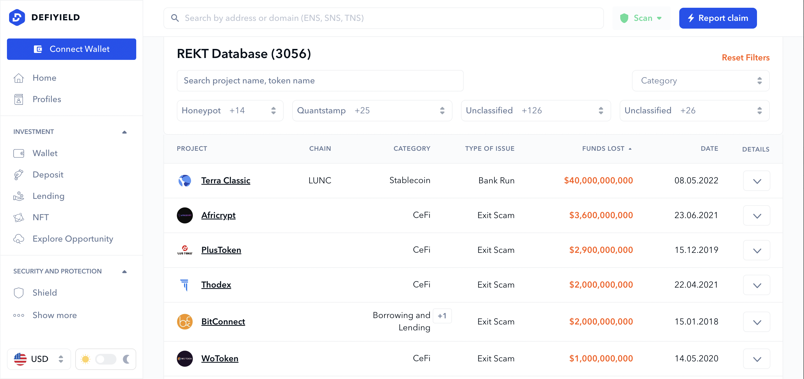
Twitter API
News API (EDA To Be Posted Soon!)
REKT Database Univariate Analysis: Numerical Variables
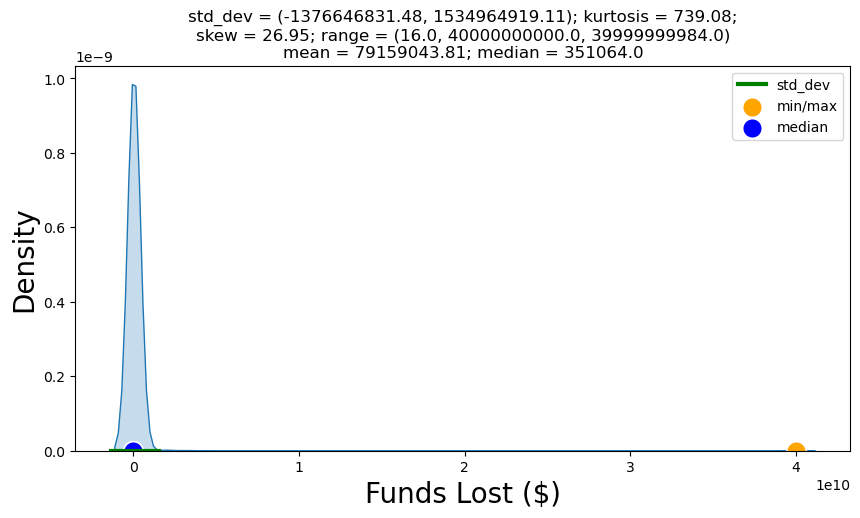
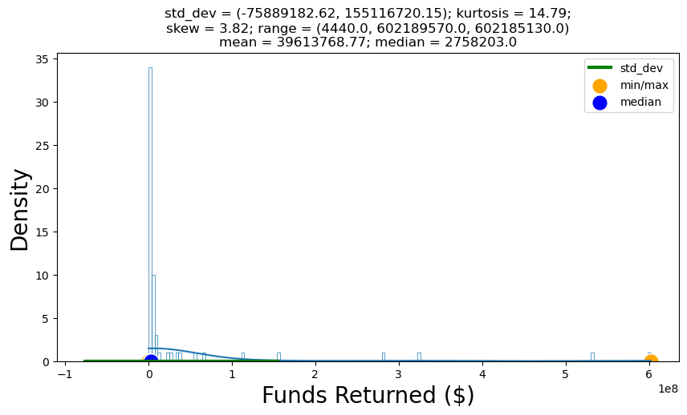
Applying Log Normal Transformation to both Funds Variables, we get an ideal fit for our data with no skewness or kurtosis present:
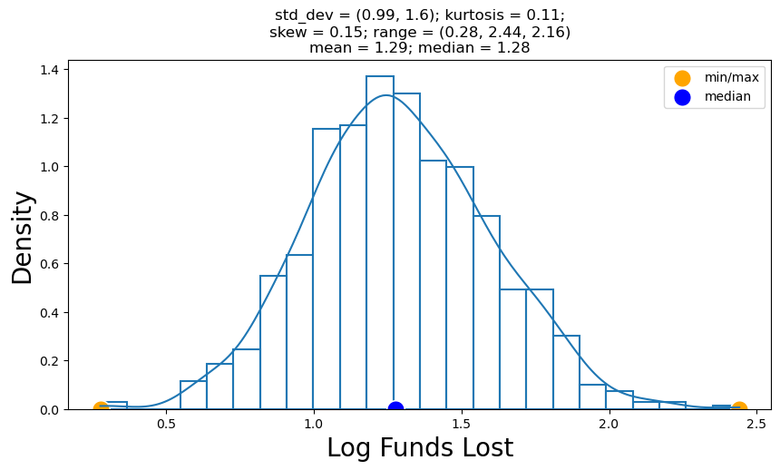
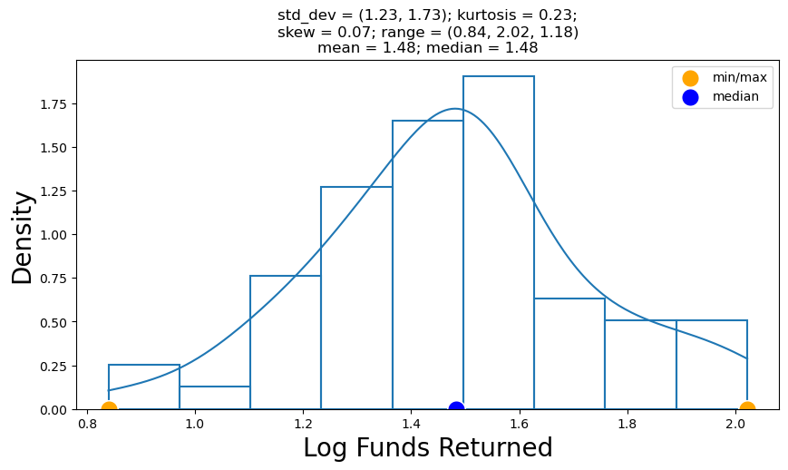
REKT Database Univariate Analysis: Categorical Variables
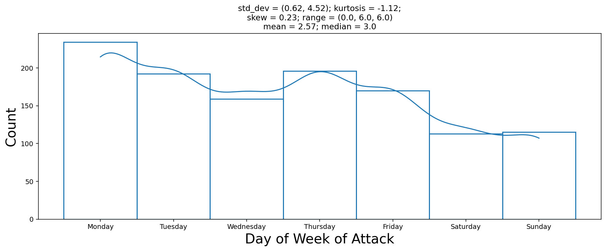
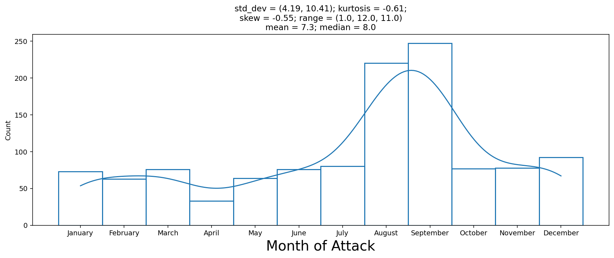
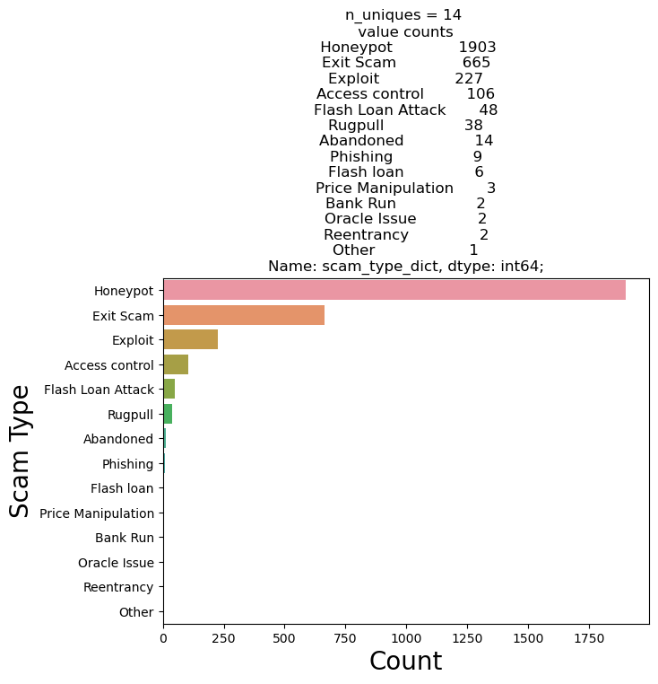
REKT Database Univariate Analysis: Outlier Detection
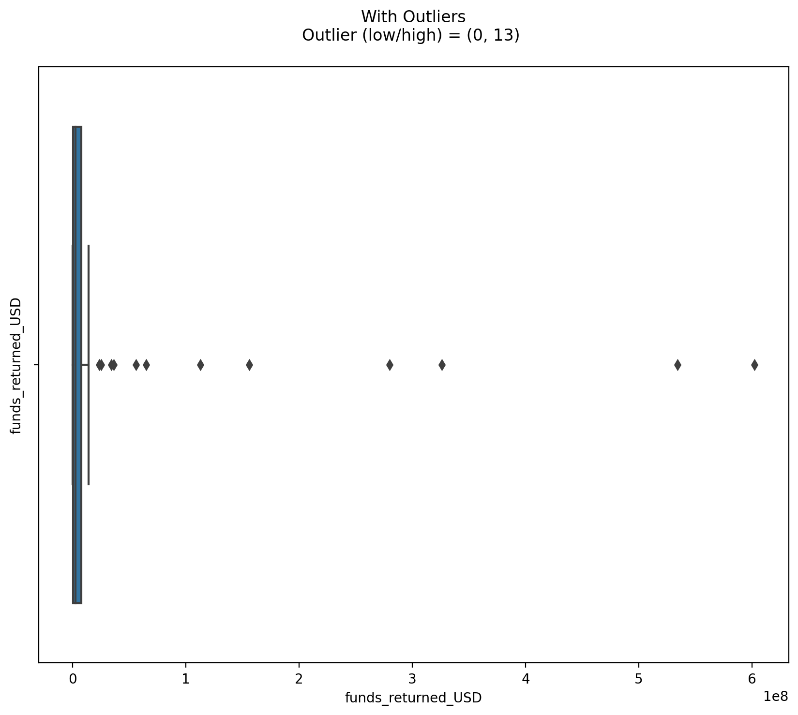
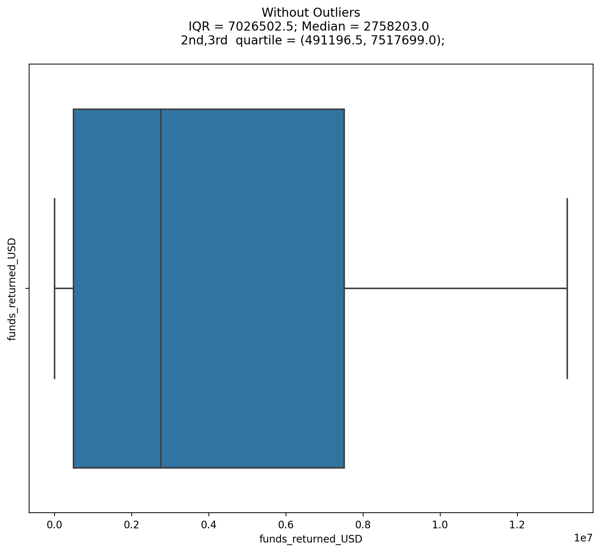
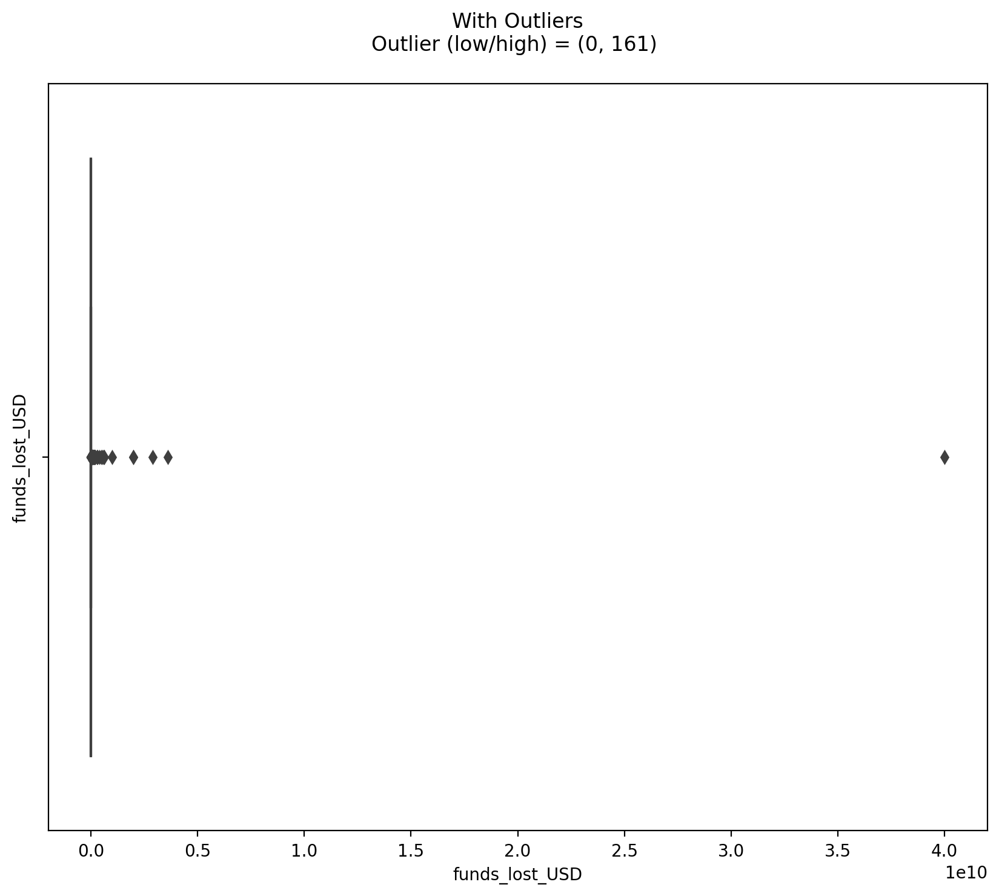
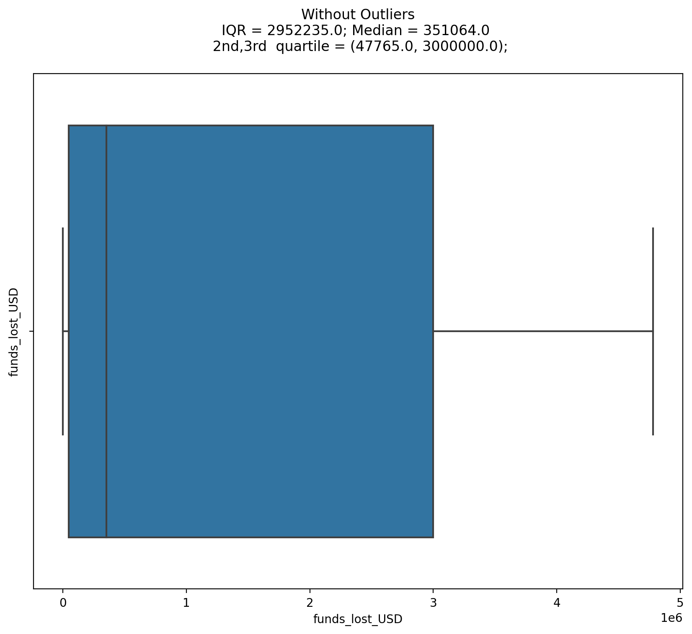
REKT Database Bivariate Analysis : Numerical-Numerical
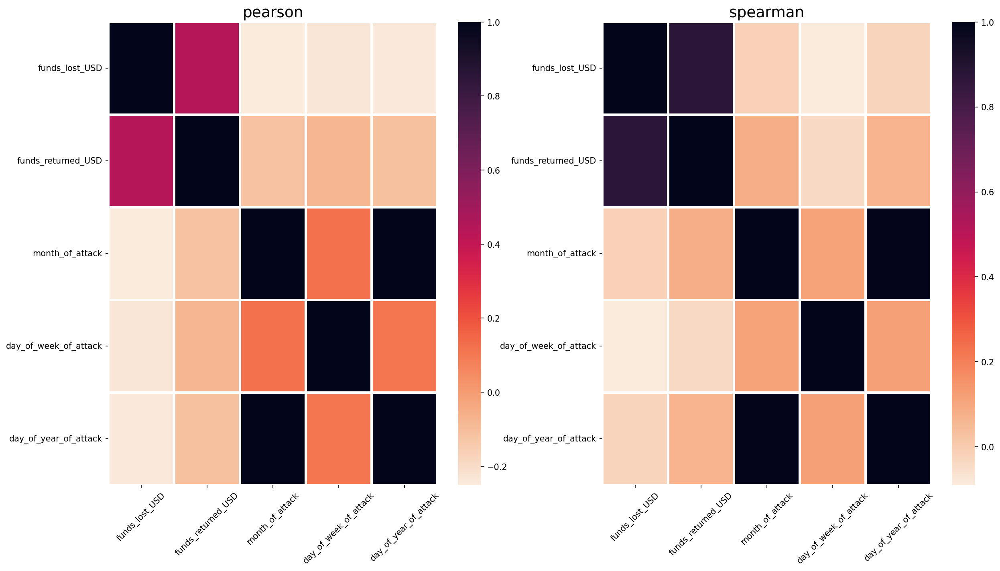
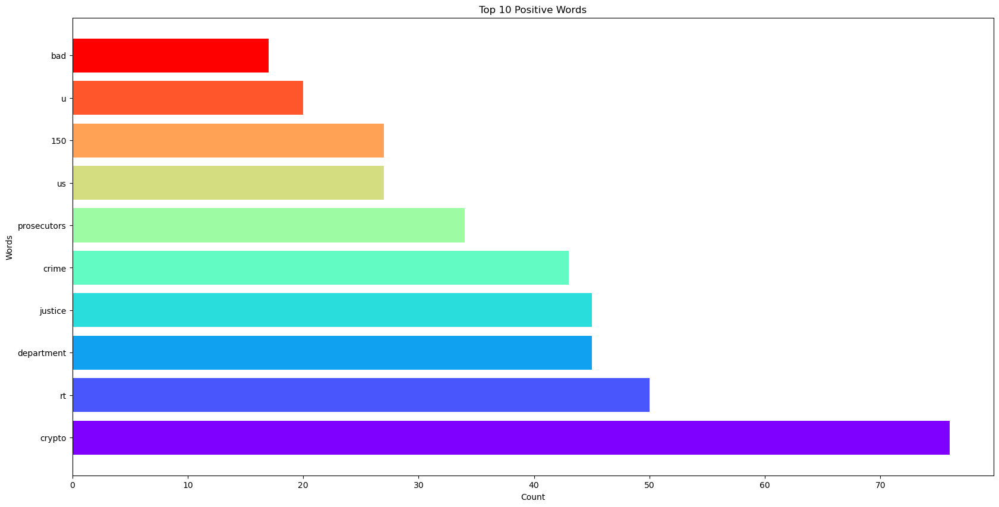
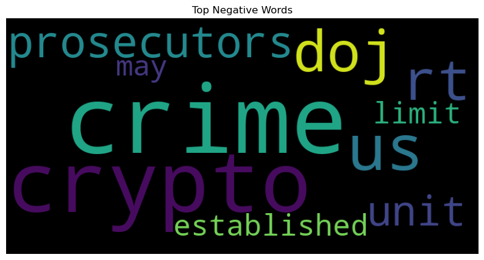
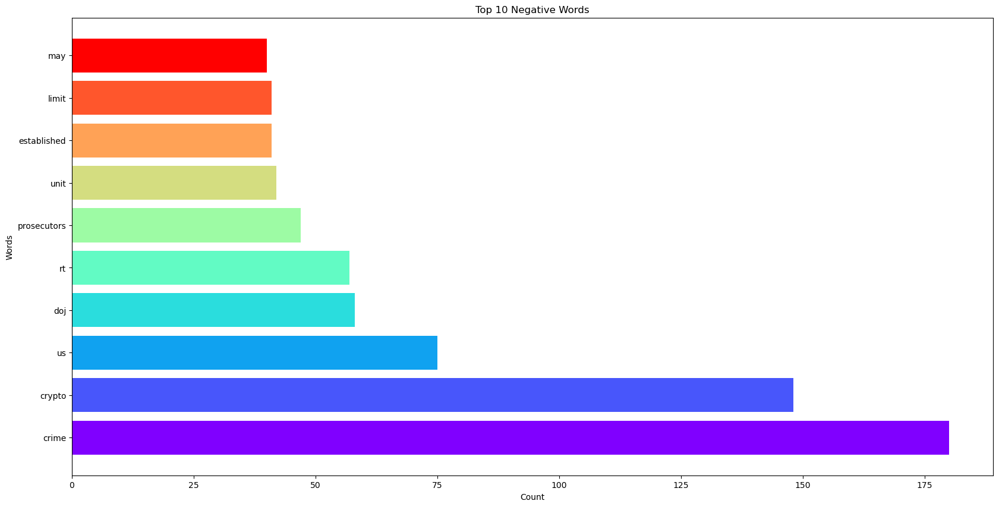